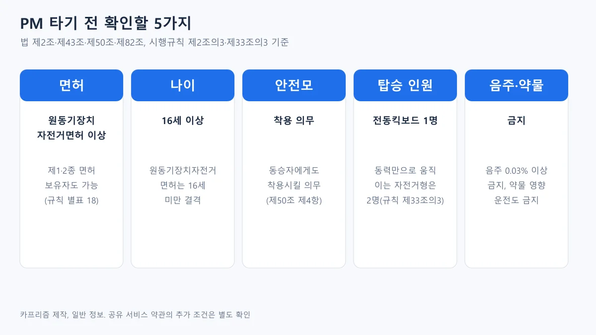
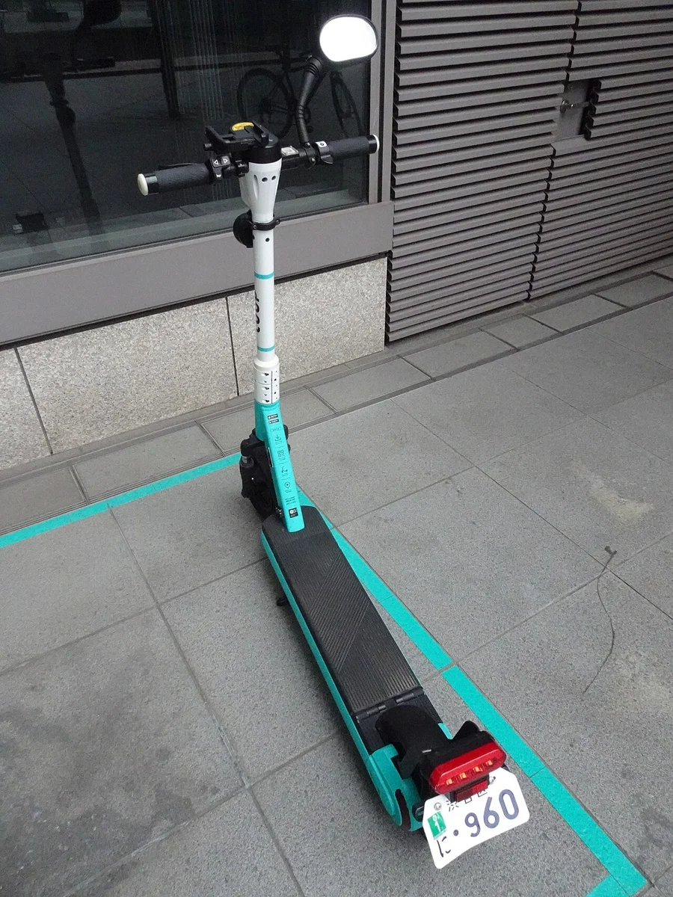
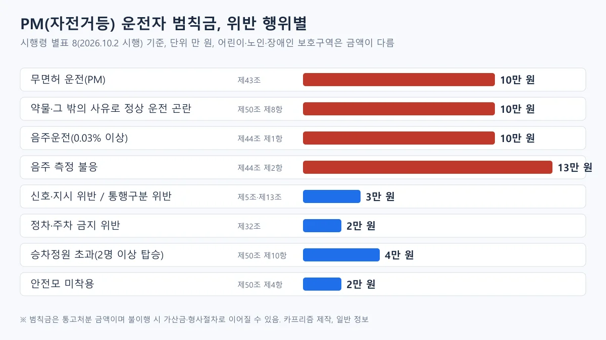
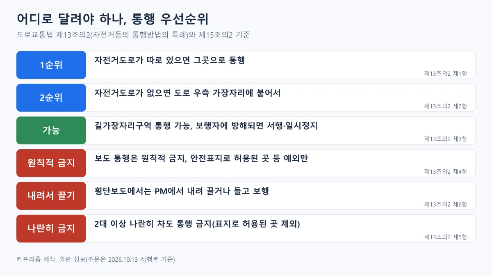
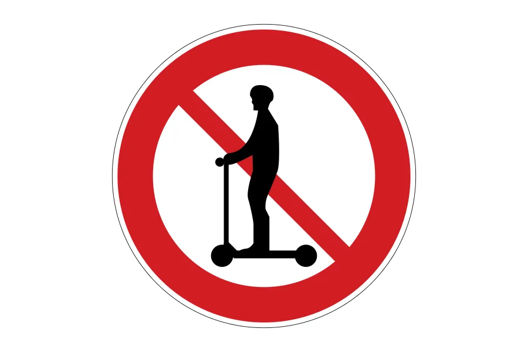
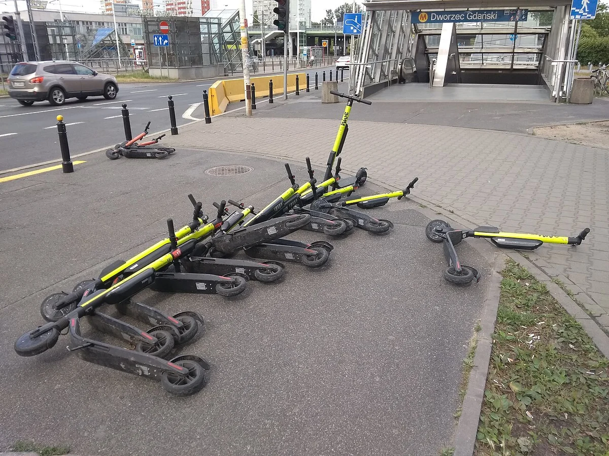
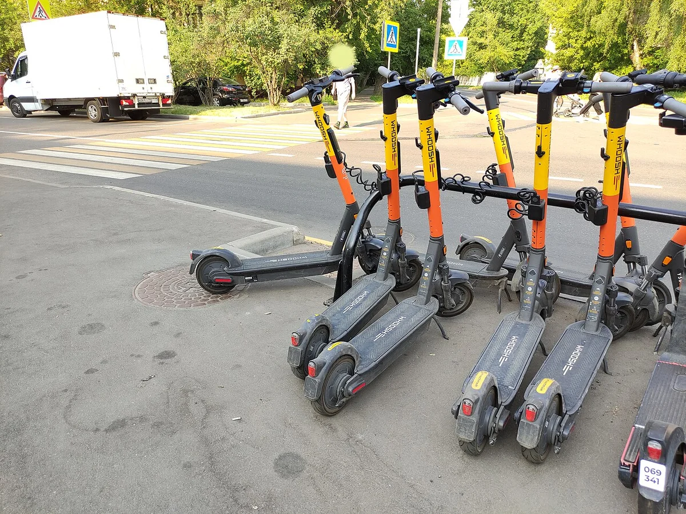
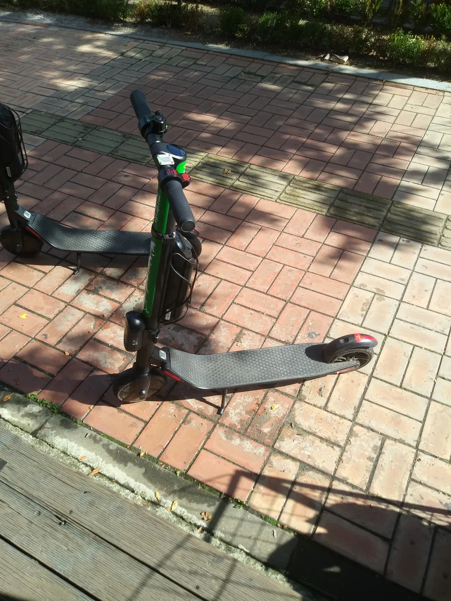
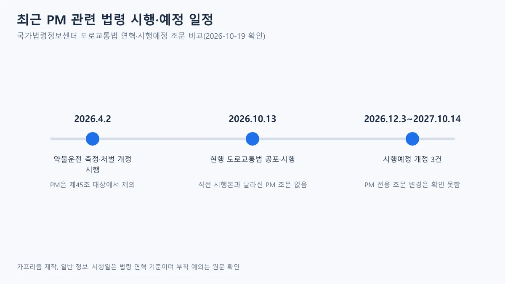

▲ 자전거도로 표시 옆에 세워 둔 공유 전동킥보드(2019년 폴란드 바르샤바). 한국 사진이 아니며 PM의 일반적 모습을 보여 주는 사례 ⓒ Cybularny / Wikimedia Commons (CC0)
"전동킥보드는 자전거처럼 그냥 타도 되는 거 아닌가요?" 공유 킥보드 앱은 몇 번만 누르면 잠금이 풀리지만, 도로교통법은 이 기기를 자전거가 아니라 원동기장치자전거의 한 종류로 본다. 그래서 면허, 안전모, 탑승 인원, 음주, 통행 장소, 주차까지 따로 따라붙는 규칙이 있다.
이 글은 국가법령정보센터의 도로교통법(2026년 10월 13일 공포·시행본), 시행령 별표(2026년 10월 2일 시행본), 시행규칙(2026년 8월 24일 시행본) 원문을 직접 열어 확인한 금액과 조문만 적었다. 이 글은 일반 정보이며 법률 자문이 아니다. 실제 단속과 처분은 사안마다 다르므로 개별 사건은 경찰서나 변호사에게 확인해야 한다.
1. 면허와 나이 — "PM도 면허가 필요한가요?"
도로교통법 제2조 제19호의2는 개인형 이동장치(PM)를 "시속 25킬로미터 이상으로 운행할 경우 전동기가 작동하지 아니하고 차체 중량이 30킬로그램 미만인 것으로서 행정안전부령으로 정하는 것"으로 정의하고, 이 기기를 원동기장치자전거(제19호 나목) 중 하나로 둔다. 시행규칙 제2조의3은 그 범위를 전동킥보드, 전동이륜평행차, 전동기의 동력만으로 움직일 수 있는 자전거로 적고, 전기용품 및 생활용품 안전관리법에 따른 안전확인 신고가 된 것이라는 조건을 붙인다.
원동기장치자전거를 운전하려면 제80조에 따른 운전면허가 필요하고(제43조), 면허별로 운전할 수 있는 차는 시행규칙 별표 18이 정한다. 아래 표는 같은 별표에서 원동기장치자전거가 적힌 면허를 추렸다.
| 구분 | 면허 | 비고 |
|---|---|---|
| 제2종 | 원동기장치자전거면허, 소형면허, 보통면허 | 가장 낮은 요건이 원동기장치자전거면허 |
| 제1종 | 대형면허·보통면허·소형면허 | 별표에 원동기장치자전거가 함께 적혀 있다 |
| 연습면허 | 표에 원동기장치자전거는 적혀 있지 않다 | 이 글은 연습면허로 운전 가능한지 단정하지 않는다 |
나이는 제82조 제1항 제1호가 정한다. 18세 미만(원동기장치자전거의 경우에는 16세 미만)은 운전면허를 받을 수 없으므로, PM 운전에 필요한 면허도 16세부터 받을 수 있다는 구조다. 면허 효력이 정지된 상태에서 운전해도 제43조 위반이 된다.

▲ PM 타기 전 확인할 5가지 요약. 법 제2조·제43조·제50조·제82조와 시행규칙 제2조의3·제33조의3 기준 ⓒ 카프리즘 제작 도표
무면허로 걸리면
시행령 별표 8은 개인형 이동장치 무면허 운전(제43조)의 범칙금을 자전거등 10만 원으로 적는다. 법 제154조 제2호(원동기장치자전거 무면허, 30만 원 이하 벌금·구류)는 괄호로 PM 운전을 제외하고, 제156조 제13호가 PM 무면허 운전을 따로 적어 20만 원 이하 벌금·구류·과료 대상으로 둔다. 범칙금 통고를 이행하지 않으면 이런 형사절차로 이어질 수 있다는 구조이며, 구체적 적용은 사안마다 다르다.
보호자에게도 책임이 있다. 제11조 제4항은 어린이의 보호자가 도로에서 어린이에게 PM을 운전하게 하는 것을 금지하고, 어기면 제160조 제2항 제9호에 따른 과태료 대상이며 시행령 별표 6은 10만 원으로 적는다. 면허 없이 PM을 타는 청소년 문제는 무면허 교통사고 통계 기사에서 도로교통공단 자료로 다뤘다. 국가법령정보센터 도로교통법 바로가기
2. 안전모와 2명 탑승 — 가장 흔한 두 가지
제50조 제4항은 자전거등(자전거와 PM)의 운전자가 자전거도로와 도로법에 따른 도로를 운전할 때 인명보호 장구를 착용하고, 동승자에게도 착용시키도록 정한다. 시행규칙 제32조 제2항은 이 장구를 충격 흡수성·내관통성이 있고 충격으로 쉽게 벗겨지지 않는 안전모 기준에 맞는 것으로 정한다. 별표 8은 PM 인명보호 장구 미착용(제38의2호) 2만 원을 따로 적는다.
탑승 인원은 제50조 제10항과 시행규칙 제33조의3이 정한다. 전동킥보드·전동이륜평행차는 1명, 전동기의 동력만으로 움직일 수 있는 자전거형은 2명이다. 승차정원을 넘겨 동승자를 태우면 별표 8 제3의4호에 따라 자전거등 4만 원이다. 도로교통공단은 2023년 보도자료에서 2명 이상 탑승 사고 사례로 2020년 10월 인천 계양구(운전자 16세 사망, 동승자 16세 중상), 2021년 2월 전북 남원시(운전자 17세 경상, 동승자 28세 사망)를 소개했다. 도로교통공단 보도자료 바로가기

▲ 일본 도쿄의 지정 주차 구역에 세워 둔 공유 전동킥보드(번호판 표시 있음). 한국 규정과는 다른 일본 사례다 ⓒ RuinDig/Yuki Uchida / Wikimedia Commons (CC BY 4.0)
📍 밤에 탈 때와 기기 상태 의무
- 제50조 제9항은 자전거등 운전자가 밤에 도로를 통행할 때 전조등과 미등을 켜거나 야광띠 등 발광장치를 착용하도록 정한다
- 제50조 제7항은 행정안전부령이 정하는 크기·구조를 갖추지 않아 교통안전에 위험을 줄 수 있는 자전거등의 운전을 금지한다
- 범칙금은 시행령 별표 8에서 줄 단위로 확인했다. 제9항 위반(별표 8 제57의2호, 자전거 운전자 제외)과 제7항 위반(제64호)은 각각 자전거등 1만 원 구간이다
3. 음주·약물 — 0.03%부터 금지, 처벌 구조는 자동차와 다르다
제44조 제1항은 술에 취한 상태에서 자동차등, 노면전차 또는 자전거를 운전하는 것을 금지하고, 제4항은 취한 상태의 기준을 혈중알코올농도 0.03% 이상으로 정한다. 시행령 별표 8은 PM의 범칙금을 아래처럼 정한다.
| 행위 | 근거 | PM 범칙금 |
|---|---|---|
| 술에 취한 상태에서의 자전거등 운전 | 제44조 제1항 (별표 8 제64의2호) | 10만 원 (자전거는 3만 원) |
| 음주 측정 불응 | 제44조 제2항 (제64의3호) | 13만 원 (자전거는 10만 원) |
| 음주운전 후 측정방해행위 | 제44조 제5항 (제64의4호) | 13만 원 (자전거는 10만 원) |
| 약물·그 밖의 사유로 정상 운전이 어려운 상태에서 자전거등 운전 | 제50조 제8항 (제1의5호) | 10만 원 (자전거등) |

▲ PM 운전자 위반별 범칙금(시행령 별표 8). 어린이·노인·장애인 보호구역은 별표 10에서 금액이 다르다 ⓒ 카프리즘 제작 도표
범칙금 통고 대상인 이유는 법 제156조에 있다. 제156조 제11호는 제44조 제1항을 위반해 술에 취한 상태에서 자전거등을 운전한 사람, 제12호는 그 측정에 응하지 않은 자전거등 운전자, 제12호의2는 측정방해행위를 한 사람을 20만 원 이하의 벌금·구류·과료 대상으로 정한다. 어린이·노인·장애인 보호구역은 시행령 별표 10이 따로 정하는데, 이 표에서 자전거등의 금액은 신호·지시 위반과 횡단보도 보행자 횡단 방해 6만 원, 통행 금지·제한 위반과 보행자 통행 방해 4만 원, 정차·주차 금지(제32조)·주차금지(제33조) 위반은 어린이보호구역 6만 원·노인·장애인보호구역 4만 원이다. 무면허·안전모·음주는 별표 10에 없다.
"자동차 음주운전처럼 면허 취소가 되나요?"는 단정할 수 없다
법 조문은 PM을 일부 처벌 규정에서 명시적으로 제외한다. 제148조의2 제1항(10년 내 재범 가중 처벌)은 "개인형 이동장치를 운전한 경우는 제외한다"고 적고, 제80조의2(음주운전 방지장치 부착 조건부 운전면허)도 같은 문구를 둔다. 반면 제148조의2 제3항(음주운전 본죄)은 "자동차등 또는 노면전차"를, 제93조 제1항 제1호(음주운전 면허 취소·정지)는 "자동차등"을 운전한 경우를 적는다.
원동기장치자전거가 자동차등에 들어가므로 PM에도 이 조항이 적용되는지 의문이 생길 수 있다. 다만 시행규칙 별표 28(면허 취소·정지 처분 기준)에는 개인형 이동장치 별도 규정이 없었다. 현행 PM 음주운전의 형사처벌 적용과 면허 처분 여부는 이 글에서 확인하지 못했고, 단정하지 않는다. 실제 사안은 경찰과 법원의 판단 영역이므로 변호사와 상의해야 한다.
✔ 약물·음주 관련 정확한 표현 체크
- "PM은 약물운전 처벌 대상이 아니다"는 절반만 맞다. 제45조(과로·질병·약물)와 제148조의2 제5항은 PM을 제외하지만, 제50조 제8항이 자전거등의 약물·정상 운전 곤란 운전을 따로 금지하고 범칙금 10만 원을 둔다
- 2026년 4월 2일 시행된 약물 타액 간이시약 측정(제45조 제2항)은 "자동차등 또는 노면전차" 운전자를 대상으로 하며, 제45조 제1항은 괄호로 PM을 제외한다. 개정 내용은 약물 측정 불응 기사에 있다
- 음주운전 방지장치 조건부 면허는 PM을 운전한 경우를 제외한다. 대상과 첫 적용일은 조건부 면허 기사를 보자
- 술이 깬 아침의 기준은 숙취운전 기사에서 다뤘다
4. 어디로, 얼마나 빠르게 — 통행 장소와 속도
제13조의2는 자전거등의 통행 순서를 정한다. 자전거도로가 있으면 그곳, 없으면 도로 우측 가장자리로 통행한다. 길가장자리구역은 안전표지로 금지한 구간이 아니면 통행할 수 있고, 보행자에게 방해가 되면 서행하거나 일시정지해야 한다.

▲ 자전거등 통행 우선순위와 금지 사항(도로교통법 제13조의2) ⓒ 카프리즘 제작 도표

▲ 도로교통법 시행규칙 별표 6의 규제표지 '개인형 이동장치 통행금지'(제205의2호). 이런 표지가 붙은 구간에는 PM이 들어갈 수 없다 ⓒ 대한민국 정부 / Wikimedia Commons (South Korea-Gov, 편집: Fry1989)
| 상황 | 조문이 정한 내용 | 위반 시 참고 범칙금 |
|---|---|---|
| 보도 통행 | 보도와 차도가 구분된 도로에서는 차도로 통행. 보도 예외는 안전표지로 허용된 경우, 도로 파손·공사 등 통행 불가 경우, 어린이·노인 등이 자전거를 운전하는 경우 | 제13조 제1항 위반은 별표 8 제5호 구간(자전거등 3만 원) |
| 횡단보도 | 자전거등에서 내려서 끌거나 들고 보행 | 별표 8 근거 조문 열에 제13조의2가 없어 범칙금 항목을 확인하지 못함 |
| 자전거횡단도 | 있으면 그곳으로 횡단. 다른 차마는 자전거횡단도 앞에서 일시정지 | 일시정지 의무 위반(제15조의2 제3항)은 자전거등 3만 원 |
| 2대 이상 나란히 | 안전표지로 허용되지 않으면 차도에서 나란히 통행 금지 | 별표 8 근거 조문 열에 제13조의2가 없어 범칙금 항목을 확인하지 못함 |
| 신호·지시 | 제5조 신호·지시 위반 | 자전거등 3만 원 |
| 보행자 보호 | 제27조 보행자 통행 방해·보호 불이행 | 자전거등 2만 원 |
속도는 오해가 많은 부분이다. 법 제17조 제1항과 시행규칙 제19조 제1항은 자동차등의 도로 통행 속도를 정하면서 "개인형 이동장치는 제외한다"고 적는다. 즉 일반 도로의 시속 50·60km 같은 최고속도 조문은 PM에 적용되지 않는다. 대신 PM의 법적 정의가 시속 25km 이상에서 전동기가 작동하지 않는 기기다.
2026년 1월 30일 정책기자단 기사는 일부 이용자가 최고속도를 불법 해제해 시속 100km까지 달린 사례가 보고되었고, 정부가 속도 조작을 막는 안전기준을 마련할 예정이라고 전했다. 이 기준의 시행 여부와 시기는 확인하지 못했다. 기기를 개조했을 때의 구체적 처분도 사안마다 달라 단정하지 않는다. 정책브리핑 공유 PM 주정차 기사 바로가기
5. 주차와 견인 — 세워 둔 킥보드는 누가 치우나
제32조 제1호는 모든 차의 운전자가 교차로·횡단보도·건널목, 보도와 차도가 구분된 도로의 보도에서 차를 정차·주차하는 것을 금지한다. 같은 조는 교차로 가장자리 5m 이내, 버스 정류지 10m 이내, 횡단보도 10m 이내, 소방용수시설 5m 이내 등도 금지 구역으로 열거한다. 정책브리핑 기사는 PM도 이 규정의 대상이라고 설명한다.
범칙금은 별표 8 제29호(제32조 위반) 자전거등 2만 원, 제3의3호(제10조의3 제2항에 따라 안전표지가 설치된 곳에서의 정차·주차 금지) 자전거등 4만 원이다. 어린이·노인·장애인 보호구역은 별표 10이 따로 정한다. 제35조는 경찰공무원이나 시·군공무원이 위반 주차에 대해 이동 명령이나 직접 이동·보관 조치를 할 수 있다고 적는다. 견인료와 보관료는 이번 글에서 확인하지 못했다.

▲ 넘어진 채 모여 있는 공유 전동킥보드(2019년 폴란드 바르샤바, 지하철역 입구 옆). 한국 사진이 아니며 방치 문제를 보여 주는 사례 ⓒ Cybularny / Wikimedia Commons (CC0)

▲ 횡단보도 인근에 줄지어 세워 둔 공유 전동킥보드(러시아 모스크바). 한국에서는 이런 위치가 주정차 금지 구역에 걸릴 수 있다 ⓒ Pulux11 / Wikimedia Commons (CC BY-SA 4.0)

▲ 보도블록 위에 세워 둔 공유 전동킥보드(2019년 10월, 경기 안산시 한양대 ERICA 인근). 보도 위 방치는 통행 방해 신고 대상이 될 수 있다 ⓒ Hyeon Jong Song2 / Wikimedia Commons (CC BY-SA 4.0)
📍 이용 종료 전 주차 체크
- 횡단보도·교차로·버스 정류소·점자블록·보도 중앙은 피하고, 앱의 주차 가능 구역 안내를 먼저 확인한다
- 정책브리핑 기사는 지자체가 신고 접수, 행정조치, 견인, 과태료 부과 절차를 진행한다고 전한다. 금액은 지자체 안내에서 확인한다
6. 대여 PM 이용 — 사고가 나면 누가 물어주나
보험·책임은 법 조문보다 대여 약관과 보험 상품이 좌우한다. 이 부분은 공식 자료가 2020~2021년 것이어서 현행과 다를 수 있다는 점부터 밝힌다.
| 기관·시기 | 확인된 내용 |
|---|---|
| 공정거래위원회 2020.11.17 | PM 공유서비스 5개 사업자의 12개 유형 불공정약관 시정. 사고 책임을 회원에게 전가하거나 보호프로그램 한도 안에서만 배상하던 조항 등을 고쳐, 사업자 귀책이 있으면 민법 등에 따라 책임지도록 했다 |
| 한국소비자원 2021년 11월호 웹진 | 서울지역 12개 전동킥보드 공유서비스가 모두 보험에 가입했지만, 이용자 운전 미숙 사고는 보장되지 않거나 업체마다 조건이 달랐고 보험 정보를 앱에 공개한 곳은 6곳(50%)이었다. 지하철역 주변 이용자 64명 중 안전모 착용은 2명이었다 |
| 국토교통부 2021.11.4 | 공유 PM 보험 표준안: 제3자 대인 4,000만 원 이하·대물 1,000만 원 이하 보상, 기기 결함과 이용자 과실 모두 대상. 법 제정 전이어서 13개 업체가 자율 참여, 이용자 본인 상해는 업체별 특약 |
국토부는 같은 보도에서 이 표준안이 PM 관련 법률 제정 전의 자율 참여 방식이며 법률이 제정되면 의무보험이 도입될 수 있다는 취지로 설명했다. 이 글을 쓴 시점에 대여업 법제화와 의무보험의 입법·시행 여부는 확인하지 못했다. 그래서 "공유 킥보드는 보험이 자동으로 다 된다"고 단정하기는 어렵다. 이용 전에 앱의 보험 안내에서 대인·대물 한도와 본인 상해 보장 여부를 읽고, 면허 인증 단계가 있는 서비스인지도 본다. 국토교통부 보험 표준안 보도 바로가기 한국소비자원 웹진 바로가기
사고가 나면 과실 비율은 도로 상황에 따라 달라진다. 기본 구조는 과실비율 기사에서 다뤘다. 개인 자동차보험·운전자보험이 PM 사고를 보장하는지는 상품마다 달라 약관을 확인해야 하며, 이번 글에서는 특정 상품을 비교하지 않았다.
7. 최근 개정과 앞으로 일정 — PM 전용 변경은 확인 못함

▲ PM과 관련해 확인한 도로교통법 개정·시행 일정(국가법령정보센터 연혁·시행예정 비교) ⓒ 카프리즘 제작 도표
| 시행일 | 내용 | PM 영향 |
|---|---|---|
| 2026.4.2 | 약물운전 타액 측정(제45조 제2항)·불응 처벌(제148조의2 제5·6항) 시행 | 제45조 제1항·제148조의2 제5항은 PM 제외, PM 약물은 제50조 제8항(범칙금 10만 원) |
| 2026.10.13 | 현행 법(2026.10.13 공포·시행). 직전 시행본(2026.7.1)과 비교해 달라진 조문은 제80조의2(조건부 면허 대상 정리) | PM 제외 문구 유지, PM 전용 조문 변경은 확인하지 못함 |
| 2026.12.3·2027.4.14·2027.6.3·2027.10.14 | 시행예정 개정: 어린이 시설 범위, 정보 정정 요구, 음주운전 조장 금지(제44조의2), 고속·전용도로 주정차 과태료 정리 등 | 제2조 제19호의2 등 PM 전용 조문 변경은 확인하지 못함. 제44조의2는 "자동차등 또는 노면전차" 대상이어서 PM 적용 여부는 확인하지 못함 |
시행령은 2026년 10월 2일 시행본(2026년 9월 29일 공포)에서 PM 관련 별표(과태료 별표 6, 범칙금 별표 8·10)를 확인했고, 시행규칙은 2026년 8월 24일 시행본이 현행이다. 이 글의 금액은 이 시행본 기준이며 앞으로 개정될 수 있다. 시행령 바로가기 시행규칙 바로가기
8. 사고 통계와 이 글이 확인하지 못한 것
도로교통공단 2023년 4월 6일 보도자료는 2017~2021년 5년간 PM 사고가 3,421건, 사망자가 45명이고 2022년 사망자는 26명(잠정)이라고 밝혔다. 같은 자료는 PM 사고가 연평균 96.2% 증가했고 3~4월에 늘어난다고 설명한다. 이후 연도의 공식 통계는 확인하지 못했고, 업계 단체 발표 수치는 공식 자료가 아니어서 쓰지 않았다.
- PM 음주운전의 형사처벌·면허 처분: 조문이 자동차등과 자전거등으로 나뉘어 있어 현행 적용을 확인하지 못했다.
- 견인료·보관료·지자체 과태료: 금액을 확인하지 못했다.
- 대여업 법제화·의무보험: 입법 여부와 시행일을 확인하지 못했다.
- 횡단보도 끌기·나란히 통행(제13조의2 제5·6항)의 범칙금·과태료: 별표 8 근거 조문 열에서 제13조의2를 찾지 못했고, 다른 처벌 조문은 확인하지 못했다.
- 속도 조작 방지 안전기준: 시행 시기를 확인하지 못했다.
9. 요약
PM은 법상 원동기장치자전거여서 원동기장치자전거면허 이상이 필요하고, 16세 미만은 면허를 받을 수 없다. 2026년 10월 19일 확인한 시행령 별표 8 기준으로 무면허·약물 영향 운전·음주운전은 각 10만 원, 음주 측정 불응은 13만 원, 2명 탑승은 4만 원, 안전모 미착용은 2만 원이다.
자전거도로가 있으면 그곳으로, 없으면 우측 가장자리로 달리고 횡단보도에서는 내려서 끌어야 한다. 제17조 속도 조문은 PM을 제외하며, PM의 법적 정의는 시속 25km 이상에서 전동기가 작동하지 않는 기기다. 횡단보도·교차로·버스 정류소 인근 주차는 제32조 금지 대상이고 별표 8 기준 2만 원이다.
최근 개정 중 PM 전용 조문이 바뀐 것은 확인하지 못했고, 약물운전 개정과 음주운전 방지장치 면허는 PM을 제외한다. 대여 보험은 2020~2021년 공식 자료가 대부분이라 현행 한도와 보장은 앱에서 확인해야 한다. 이 글은 일반 정보이며 법률 자문이 아니다.
📚 함께 읽으면 좋은 글